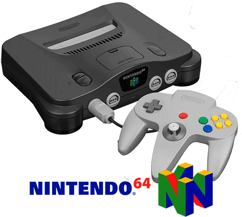

História dos Videogames
Explore a evolução dos consoles e jogos que marcaram gerações, desde os primórdios até os dias atuais.
Magnavox Odyssey: O Primeiro Console Doméstico
Lançado em 1972, o Magnavox Odyssey foi o primeiro console de videogame doméstico da história. Criado por Ralph H. Baer, o Odyssey não possuía som e exibia gráficos extremamente simples em preto e branco.
O console vinha acompanhado de overlays plásticos coloridos que eram fixados na tela da TV para dar "cor" aos jogos. Também incluía acessórios como dados, cartas e fichas para complementar a experiência, misturando características de jogos de tabuleiro com eletrônicos.
Embora não tenha vendido milhões de unidades, o Odyssey abriu caminho para toda a indústria de consoles e marcou o início de uma nova era no entretenimento digital.
Atari 2600: Popularizando os Videogames
Lançado em 1977, o Atari 2600 foi o console que realmente levou os videogames para dentro das casas e transformou a indústria do entretenimento eletrônico em um fenômeno de massa.
Famoso por seus cartuchos intercambiáveis, o Atari 2600 permitia que jogadores experimentassem dezenas de títulos diferentes, como Pong, Space Invaders e Pac-Man. Isso marcou uma mudança radical em relação aos consoles anteriores, que vinham com jogos fixos.
Apesar do sucesso inicial, o Atari 2600 também esteve no centro da crise dos videogames de 1983, provocada pelo excesso de jogos de baixa qualidade. Ainda assim, seu impacto cultural e histórico é inegável, consolidando os videogames como parte do dia a dia de milhões de pessoas.
Nintendo 64: O Salto para o 3D
Lançado em 1996, o Nintendo 64 marcou uma revolução na indústria dos videogames ao popularizar gráficos 3D e mundos totalmente exploráveis. Seu nome vem do processador de 64 bits, que garantiu uma qualidade gráfica muito superior aos consoles anteriores da Nintendo.
O console ficou famoso por jogos que definiram gerações, como Super Mario 64, The Legend of Zelda: Ocarina of Time e Mario Kart 64. Esses títulos exploraram as possibilidades do 3D de forma inovadora e se tornaram referência até hoje.
Outra grande inovação foi o controle em formato de “tridente” com um direcional analógico central, essencial para jogos em três dimensões e considerado revolucionário na época.

Xbox 360: A Era da Conectividade
Lançado em 2005, o Xbox 360 foi o segundo console da Microsoft e se tornou um grande sucesso mundial, sendo um dos principais responsáveis por popularizar o jogo online nos consoles domésticos.
Com uma biblioteca extensa de jogos aclamados como Halo 3, Gears of War, Forza Motorsport e Fable II, o Xbox 360 conquistou milhões de jogadores graças ao seu serviço Xbox Live, que oferecia partidas online, chats e conteúdo digital.
Outro destaque foi o Kinect, acessório lançado em 2010 que permitia jogar usando apenas movimentos corporais, sem controle físico, marcando uma fase inovadora e divertida do console.
O Xbox 360 vendeu mais de 84 milhões de unidades ao redor do mundo, sendo lembrado até hoje por sua comunidade ativa e títulos memoráveis.
PlayStation 5: A Nova Geração de Realismo
Lançado em novembro de 2020, o PlayStation 5 representa o salto da Sony para a nova geração de consoles, trazendo gráficos impressionantes, carregamento quase instantâneo com SSD ultrarrápido e imersão sensorial com o controle DualSense.
O PS5 oferece suporte a ray tracing, resolução 4K e até 8K, além de taxas de quadros de até 120fps em jogos compatíveis. Seu design futurista e interface renovada chamam atenção, enquanto o novo controle revoluciona a experiência com gatilhos adaptáveis e feedback háptico.
Com títulos exclusivos como Demon’s Souls, Ratchet & Clank: Rift Apart, Spider-Man: Miles Morales e Horizon Forbidden West, o console rapidamente se tornou um sucesso de vendas, mesmo diante de escassez de estoque em todo o mundo.

ASUS ROG Ally: Potência em Forma Portátil
Lançado em 2023, o ASUS ROG Ally é um console portátil com Windows que une a liberdade dos PCs com a praticidade dos portáteis. Equipado com processador AMD Ryzen Z1 Extreme e tela Full HD de 120Hz, ele oferece desempenho impressionante em um corpo compacto.
Diferente de consoles tradicionais, o ROG Ally roda jogos de PC diretamente — incluindo títulos da Steam, Epic Games e Xbox Game Pass — tornando-se uma central de jogos versátil e poderosa.
Seu design ergonômico, ventilação eficiente e interface da ASUS Armoury Crate SE permitem uma experiência fluida tanto no modo portátil quanto conectado a uma TV ou dock.
Steam Deck: A Biblioteca Steam na Palma da Mão
O Steam Deck, lançado pela Valve em 2022, é um console portátil que roda jogos de PC com sistema baseado em Linux (SteamOS). Com tela de 7 polegadas, controles integrados e touchpads, ele oferece acesso direto à vasta biblioteca da Steam.
Com versões de até 512GB e suporte para cartão microSD, o Steam Deck permite jogar títulos pesados como Elden Ring, Cyberpunk 2077 e Hades com desempenho consistente em qualquer lugar.
Além dos jogos da Steam, é possível instalar outros sistemas e lojas, tornando-o uma plataforma aberta e flexível, muito valorizada por entusiastas de tecnologia e gamers exigentes.